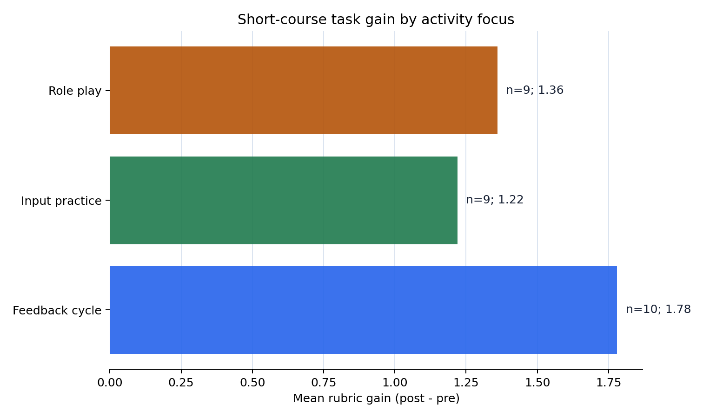
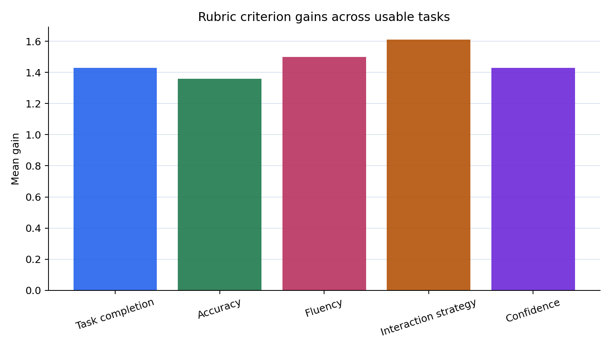

Đọc
Bản HTML giữ code và output cạnh nhau, phù hợp để ôn lại sau buổi học.
Đây là bản HTML đã chạy sẵn để đọc trên GitHub Pages. Muốn thực hành, mở notebook trong Colab hoặc tải file .ipynb.
Bản HTML giữ code và output cạnh nhau, phù hợp để ôn lại sau buổi học.
Nút Colab mở notebook có thể chạy từng cell và tự tải CSV nếu không có file local.
File .ipynb vẫn được giữ để tải, nộp bài hoặc chỉnh trong JupyterLab/VS Code.
Mục tiêu: biến một hoạt động Hán ngữ ngắn hạn thành một mini teaching-study có rubric, classroom variables, learner-task evidence và Methods draft. Tuần này ưu tiên thiết kế nghiên cứu rõ ràng hơn là chạy thống kê phức tạp.
from pathlib import Path
from urllib.request import urlretrieve
import hashlib
try:
import pandas as pd
import matplotlib
matplotlib.use("Agg")
matplotlib.rcParams["svg.hashsalt"] = "week07-tcsol-short-course"
import matplotlib.pyplot as plt
except ImportError as exc:
raise SystemExit(
"Missing package. From the project root, run: "
"python -m pip install -r requirements.txt"
) from exc
THIS_WEEK = "week-07-tcsol-short-course-research"
EXPECTED_SHA256 = "5071470f422fb53651c8ceae8d400d51414054cab62a048a7e70e225a913c62b"
def find_week_dir():
candidates = [
Path.cwd(),
Path.cwd() / "weeks" / THIS_WEEK,
Path.cwd().parent,
Path.cwd().parent / "weeks" / THIS_WEEK,
]
for candidate in candidates:
if candidate.name == THIS_WEEK and (candidate / "data/raw").exists():
return candidate
if (candidate / "data/raw/week07_short_course_learner_tasks.csv").exists():
return candidate
raise FileNotFoundError("Cannot find the Week 07 folder. Run this notebook from the project root or the Week 07 folder.")
def sha256_file(path):
return hashlib.sha256(path.read_bytes()).hexdigest()
def strip_svg_whitespace(path):
text = path.read_text(encoding="utf-8")
clean_text = "\n".join(line.rstrip() for line in text.splitlines()) + "\n"
path.write_text(clean_text, encoding="utf-8")
WEEK_DIR = find_week_dir()
DATA_PATH = WEEK_DIR / "data/raw/week07_short_course_learner_tasks.csv"
TABLE_DIR = WEEK_DIR / "outputs/tables"
FIGURE_DIR = WEEK_DIR / "outputs/figures"
TABLE_DIR.mkdir(parents=True, exist_ok=True)
FIGURE_DIR.mkdir(parents=True, exist_ok=True)
if not DATA_PATH.exists():
source = "https://raw.githubusercontent.com/mtuann/tcsol-python-research/main/weeks/week-07-tcsol-short-course-research/data/raw/week07_short_course_learner_tasks.csv"
print("Local data not found. Downloading synthetic course dataset...")
urlretrieve(source, DATA_PATH)
actual_sha = sha256_file(DATA_PATH)
if actual_sha != EXPECTED_SHA256:
raise ValueError(f"Data hash mismatch. Expected {EXPECTED_SHA256}, got {actual_sha}")
print("Week folder:", WEEK_DIR)
print("Data file:", DATA_PATH)
print("SHA-256:", actual_sha)Week folder: /Users/mitu/Desktop/work/projects/tcsol-python-research-syllabus/weeks/week-07-tcsol-short-course-research
Data file: /Users/mitu/Desktop/work/projects/tcsol-python-research-syllabus/weeks/week-07-tcsol-short-course-research/data/raw/week07_short_course_learner_tasks.csv
SHA-256: 5071470f422fb53651c8ceae8d400d51414054cab62a048a7e70e225a913c62bTa dùng một vòng đơn giản:
``text teaching goal -> target structure -> learner task -> rubric -> classroom variables -> Methods draft ``
Câu hỏi mẫu: Trong một khóa Hán ngữ ngắn hạn, activity focus nào tạo ra learner-task evidence rõ nhất cho target structure?
df = pd.read_csv(DATA_PATH)
usable = df[df["usable_task"] == True].copy()
score_columns = [
"task_completion_pre", "task_completion_post",
"accuracy_pre", "accuracy_post",
"fluency_pre", "fluency_post",
"interaction_strategy_pre", "interaction_strategy_post",
"confidence_pre", "confidence_post",
]
for column in score_columns:
usable[column] = pd.to_numeric(usable[column])
print("Raw rows:", len(df))
print("Usable rows:", len(usable))
print(usable[["learner_id", "activity_focus", "target_structure", "completed_task", "usable_task"]].head(8).to_string(index=False))Raw rows: 30
Usable rows: 28
learner_id activity_focus target_structure completed_task usable_task
L001 input_practice result complements True True
L002 input_practice result complements True True
L003 input_practice result complements True True
L004 input_practice result complements True True
L005 input_practice result complements True True
L006 input_practice result complements True True
L007 input_practice result complements True True
L008 input_practice result complements True TrueRubric trong notebook này không phải chấm điểm cuối kỳ. Nó là công cụ biến learner task thành dữ liệu có thể mô tả.
task_completion: hoàn thành nhiệm vụ giao tiếp.accuracy: dùng cấu trúc đích tương đối đúng.fluency: nói/viết mạch lạc vừa đủ cho nhiệm vụ.interaction_strategy: biết hỏi lại, sửa, hoặc kéo dài tương tác.confidence: mức tự tin trong task.Nguyên tắc: rubric phải gắn với task cụ thể, không dùng như nhãn chung chung “giỏi/yếu”.
criteria = [
("task_completion", "Task completion"),
("accuracy", "Accuracy"),
("fluency", "Fluency"),
("interaction_strategy", "Interaction strategy"),
("confidence", "Confidence"),
]
for stem, label in criteria:
usable[f"{stem}_gain"] = usable[f"{stem}_post"] - usable[f"{stem}_pre"]
usable["total_pre"] = usable[[f"{stem}_pre" for stem, _ in criteria]].mean(axis=1)
usable["total_post"] = usable[[f"{stem}_post" for stem, _ in criteria]].mean(axis=1)
usable["total_gain"] = usable["total_post"] - usable["total_pre"]
print(usable[["learner_id", "activity_label", "total_pre", "total_post", "total_gain"]].head(8).round(2).to_string(index=False))learner_id activity_label total_pre total_post total_gain
L001 Input practice 1.8 2.8 1.0
L002 Input practice 2.0 3.0 1.0
L003 Input practice 2.0 3.0 1.0
L004 Input practice 3.0 4.0 1.0
L005 Input practice 1.8 3.8 2.0
L006 Input practice 3.2 4.2 1.0
L007 Input practice 1.8 2.8 1.0
L008 Input practice 2.2 4.2 2.0Một bài paper ngắn cần nói rõ: đơn vị phân tích là gì, biến nhóm là gì, outcome được đo thế nào, và limitation nằm ở đâu. Vì vậy Week 07 xuất week07_variable_map.csv trước khi viết Methods.
variable_map = pd.DataFrame([
{"variable":"learner_id","role":"unit id","measurement":"one synthetic learner task record"},
{"variable":"activity_focus","role":"grouping variable","measurement":"input practice, role play, or feedback cycle"},
{"variable":"target_structure","role":"teaching focus","measurement":"short-course Chinese target structure"},
{"variable":"task_completion_*","role":"rubric criterion","measurement":"1-5 score before/after activity"},
{"variable":"accuracy_*","role":"rubric criterion","measurement":"1-5 score before/after activity"},
{"variable":"fluency_*","role":"rubric criterion","measurement":"1-5 score before/after activity"},
{"variable":"interaction_strategy_*","role":"rubric criterion","measurement":"1-5 score before/after activity"},
{"variable":"main_difficulty","role":"qualitative code","measurement":"teacher-coded learning difficulty"},
{"variable":"teacher_feedback","role":"qualitative note","measurement":"short teacher observation"},
])
variable_map_path = TABLE_DIR / "week07_variable_map.csv"
variable_map.to_csv(variable_map_path, index=False)
print("Saved:", variable_map_path)
print(variable_map.to_string(index=False))Saved: /Users/mitu/Desktop/work/projects/tcsol-python-research-syllabus/weeks/week-07-tcsol-short-course-research/outputs/tables/week07_variable_map.csv
variable role measurement
learner_id unit id one synthetic learner task record
activity_focus grouping variable input practice, role play, or feedback cycle
target_structure teaching focus short-course Chinese target structure
task_completion_* rubric criterion 1-5 score before/after activity
accuracy_* rubric criterion 1-5 score before/after activity
fluency_* rubric criterion 1-5 score before/after activity
interaction_strategy_* rubric criterion 1-5 score before/after activity
main_difficulty qualitative code teacher-coded learning difficulty
teacher_feedback qualitative note short teacher observationweek07_rubric_gain_summary.csv: criterion nào tăng nhiều nhất?week07_activity_summary.csv: activity focus nào có total rubric gain cao hơn và difficulty phổ biến là gì?Đây vẫn là descriptive evidence. Không viết “activity này hiệu quả nhất” nếu chưa có thiết kế kiểm soát tốt.
criterion_rows = []
for stem, label in criteria:
criterion_rows.append({
"criterion": stem,
"criterion_label": label,
"pre_mean": usable[f"{stem}_pre"].mean(),
"post_mean": usable[f"{stem}_post"].mean(),
"mean_gain": usable[f"{stem}_gain"].mean(),
})
criterion_summary = pd.DataFrame(criterion_rows).round(2)
criterion_path = TABLE_DIR / "week07_rubric_gain_summary.csv"
criterion_summary.to_csv(criterion_path, index=False)
def top_value(series):
return series.value_counts().idxmax()
activity_summary = (
usable.groupby(["activity_focus", "activity_label"])
.agg(
n=("learner_id", "count"),
attendance_mean=("attendance_hours", "mean"),
total_pre_mean=("total_pre", "mean"),
total_post_mean=("total_post", "mean"),
total_gain_mean=("total_gain", "mean"),
top_difficulty=("main_difficulty", top_value),
)
.reset_index()
.round(2)
)
activity_path = TABLE_DIR / "week07_activity_summary.csv"
activity_summary.to_csv(activity_path, index=False)
print("Saved:", criterion_path)
print(criterion_summary.to_string(index=False))
print("\nSaved:", activity_path)
print(activity_summary.to_string(index=False))Saved: /Users/mitu/Desktop/work/projects/tcsol-python-research-syllabus/weeks/week-07-tcsol-short-course-research/outputs/tables/week07_rubric_gain_summary.csv
criterion criterion_label pre_mean post_mean mean_gain
task_completion Task completion 2.36 3.79 1.43
accuracy Accuracy 2.86 4.21 1.36
fluency Fluency 1.96 3.46 1.50
interaction_strategy Interaction strategy 1.79 3.39 1.61
confidence Confidence 2.57 4.00 1.43
Saved: /Users/mitu/Desktop/work/projects/tcsol-python-research-syllabus/weeks/week-07-tcsol-short-course-research/outputs/tables/week07_activity_summary.csv
activity_focus activity_label n attendance_mean total_pre_mean total_post_mean total_gain_mean top_difficulty
feedback_cycle Feedback cycle 10 6.55 2.24 4.02 1.78 self-correction
input_practice Input practice 9 6.17 2.29 3.51 1.22 meaning-form link
role_play Role play 9 6.22 2.40 3.76 1.36 measure word choiceFigure trong Week 07 phục vụ Methods/Design discussion: nó giúp nói activity focus, rubric criterion và learner evidence ăn khớp thế nào.
palette = ["#2563eb", "#1f7a4d", "#b45309"]
figure_metadata = {"Date": "2026-06-03"}
fig, ax = plt.subplots(figsize=(8.4, 5.0))
ax.barh(activity_summary["activity_label"], activity_summary["total_gain_mean"], color=palette, alpha=0.9)
for i, row in activity_summary.iterrows():
ax.text(row["total_gain_mean"] + 0.03, i, f"n={int(row['n'])}; {row['total_gain_mean']:.2f}", va="center", fontsize=10, color="#172033")
ax.set_xlabel("Mean rubric gain (post - pre)")
ax.set_title("Short-course task gain by activity focus")
ax.grid(axis="x", color="#dbe4f0", linewidth=0.8)
ax.set_axisbelow(True)
for spine in ["top", "right", "left"]:
ax.spines[spine].set_visible(False)
fig.tight_layout()
activity_png = FIGURE_DIR / "week07_total_gain_by_activity.png"
activity_svg = FIGURE_DIR / "week07_total_gain_by_activity.svg"
fig.savefig(activity_png, dpi=180, metadata=figure_metadata)
fig.savefig(activity_svg, format="svg", metadata=figure_metadata)
strip_svg_whitespace(activity_svg)
plt.close(fig)
fig, ax = plt.subplots(figsize=(8.4, 4.8))
ax.bar(criterion_summary["criterion_label"], criterion_summary["mean_gain"], color=["#2563eb", "#1f7a4d", "#b8325f", "#b45309", "#6d28d9"], alpha=0.9)
ax.set_ylabel("Mean gain")
ax.set_title("Rubric criterion gains across usable tasks")
ax.tick_params(axis="x", rotation=18)
ax.grid(axis="y", color="#dbe4f0", linewidth=0.8)
ax.set_axisbelow(True)
for spine in ["top", "right"]:
ax.spines[spine].set_visible(False)
fig.tight_layout()
criterion_png = FIGURE_DIR / "week07_rubric_gain_by_criterion.png"
criterion_svg = FIGURE_DIR / "week07_rubric_gain_by_criterion.svg"
fig.savefig(criterion_png, dpi=180, metadata=figure_metadata)
fig.savefig(criterion_svg, format="svg", metadata=figure_metadata)
strip_svg_whitespace(criterion_svg)
plt.close(fig)
print("Saved:", activity_png)
print("Saved:", criterion_png)Saved: /Users/mitu/Desktop/work/projects/tcsol-python-research-syllabus/weeks/week-07-tcsol-short-course-research/outputs/figures/week07_total_gain_by_activity.png
Saved: /Users/mitu/Desktop/work/projects/tcsol-python-research-syllabus/weeks/week-07-tcsol-short-course-research/outputs/figures/week07_rubric_gain_by_criterion.png

Một đoạn Methods tốt trả lời bốn câu:
Không cần viết Results dài trong tuần này. Viết Methods trước để research design chắc.
methods_draft = f"""
This mini study uses a synthetic short-course TCSOL task dataset with {len(df)} learner task records, of which {len(usable)} were usable after excluding incomplete tasks. The unit of analysis is one learner task record. The teaching focus is short-term practice of Chinese target structures, including result complements and measure-word use. Activity focus is coded as input practice, role play, or feedback cycle. Learner task evidence is summarized with a five-criterion 1-5 rubric: task completion, accuracy, fluency, interaction strategy, and confidence. For each criterion, pre-task and post-task scores are used to compute descriptive gains. The analysis reports rubric gain by activity focus and identifies the most frequent teacher-coded learning difficulty. Because the dataset is synthetic, small, and not randomly assigned, the analysis is used to practice research design and descriptive reporting rather than to claim causal teaching effectiveness.
""".strip()
print(methods_draft)
print("\nWord count:", len(methods_draft.split()))This mini study uses a synthetic short-course TCSOL task dataset with 30 learner task records, of which 28 were usable after excluding incomplete tasks. The unit of analysis is one learner task record. The teaching focus is short-term practice of Chinese target structures, including result complements and measure-word use. Activity focus is coded as input practice, role play, or feedback cycle. Learner task evidence is summarized with a five-criterion 1-5 rubric: task completion, accuracy, fluency, interaction strategy, and confidence. For each criterion, pre-task and post-task scores are used to compute descriptive gains. The analysis reports rubric gain by activity focus and identifies the most frequent teacher-coded learning difficulty. Because the dataset is synthetic, small, and not randomly assigned, the analysis is used to practice research design and descriptive reporting rather than to claim causal teaching effectiveness.
Word count: 136target_structure thành cấu trúc đang dạy trong khóa ngắn hạn.target_structure phù hợp với khóa Hán ngữ ngắn hạn.week07_variable_map.csv, week07_rubric_gain_summary.csv, week07_activity_summary.csv và hai figures.main_difficulty và giải thích vì sao nó cần thiết.